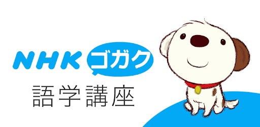

オンデマンド教材における音声とスライドの分離
Emacs orgmode / ox-hugo / hugo / academic theme / reveal.js
理学療法学科・竹ノ下祐二
中部学院大学全学FD研修会 (2021/06/24)
Table of Contents
背景・問題意識
取り組み
考察
今後の課題
使用したツール、サービス
背景・問題意識
2020年4月の環境条件
スマートフォンしか持たない学生が多い
「ギガ欠」のリスク
情報インフラへの不安
Zoom の 高等教育向け制限解除はいつまで？
学生の心身の負担
全ての授業がビデオ会議になると学生の心身ストレスが大きい
双方向でリアルタイムに音声・映像をやり取りすることが必須でない授業に限るべき
機械操作という非本質的な作業、トラブル
容易に授業に参加できる手段を用意すべき
オンデマンド授業を選択
オンデマンド授業の課題
主体的参加
をどう引き出すか?
対話
的コミュニケーションを成立させるには？
教員と学生、学生同士の
繋がり
をいかにして作り出すか？
さまざまなやり方を検討
資料配布（と課題提出）
「参加」性に乏しい
解説ビデオ視聴（と課題提出）
通信負荷が高い
受身、集中力が持たない
人気Youtuber並の動画編集をしないと…
「ラジオ講座」はどうか？

「ラジオ番組」はどうか？
取り組み
基本構成
外部サーバーの授業ページ
解説スライドと解説音声
moodleのコース
出欠確認
質問・コメント (reaction paper)
課題
資料集
学生側から見た授業の流れ
moodleにログインし、出席登録
その日の授業ページにアクセス
解説音声を聞きながらスライドを閲覧
必要に応じてmoodleで資料を閲覧
moodleで課題と reaction paperを提出
他の学生の課題を閲覧し、再度課題を提出（宿題）
実演
2020年度「人間発達学」
工夫１：ラジオ的演出
効果音
オープニング、エンディング音楽
ジングル
オープニングトーク（雑談）
お便りコーナー
moodleの質問を次回の“放送”で取り上げる
解説ではなく、語りかける
工夫２：学生の主体的参加
音声の指示で
学生が自分でスライド操作
授業の要点のまとめと感想提出を必須
当日17:00締切
工夫３：学び合い
授業の要点のまとめを全員に開示
課題ではなくアンケート機能を用いる
他の学生の回答を見た上で、再度まとめを作成する
工夫４：その他
レスポンシブデザイン
スマートフォンでもPCでも
スライド、音声を３〜４つに分割
気分転換、集中力の入れ直し
考察
学生から高評価だった点
スライドを自分で操作する
ジングル
あとでスライドだけ見直せる
音声も聴き直せる
音声、スライドの分割
対話的コミュニケーション
moodleでの質問・感想が多い
お便りを通じた「リスナー」とのつながり
雑談をちゃんと聴いてくれる
対面授業のオープニングトークは聴いてもらえない
自室で一人「ラジオ」を聴いている学生の姿を思い浮かべながら収録
学び合い
「授業の要点」
初回は的外れなものが 1/3 程度だが、再提出はほぼ全員が適切な内容に
ディスカッションの前に各自で考えることの重要性
オンライン授業ならでは
今後の課題
遠隔・対面併用型、対面授業との統合
全面遠隔授業を前提に設計したため、使い回しに苦労
ad libitum に入る雑談が邪魔
コンテンツのモジュール化
が必要
5〜10分程度の項目単位に再構成
対面授業にも組み込みやすい
moodleへの埋め込みも？
OER化
Open Educational Resources
特定のアプリやサービス（Office365など）に依存しない
無償で誰でも利用できる
公開サーバー上にCCライセンスの教材を蓄積したい
使用したツール、サービス
コンテンツ作成
GNU Emacs
&
orgmode
サイト構築
Hugo
&
Academic theme
スライド
reveal.js
公開
Github
&
Netlify
ご静聴ありがとうございました